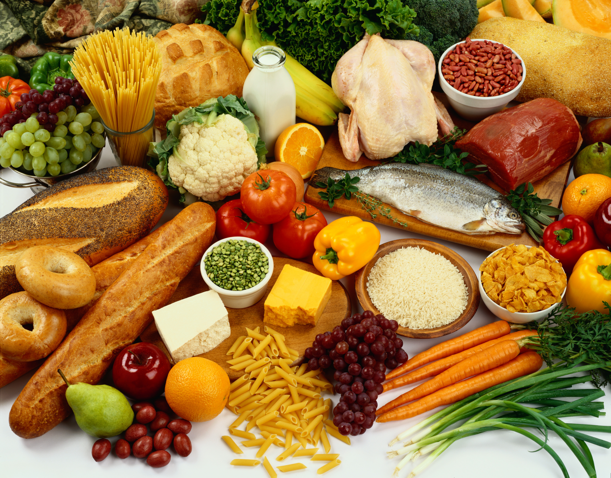
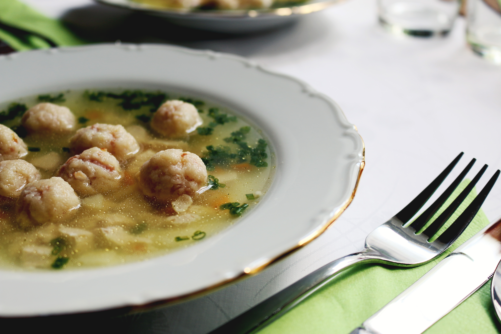
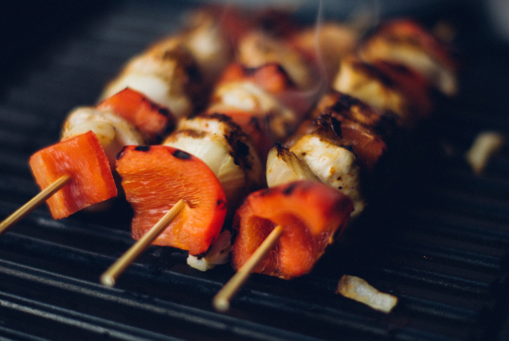

Iedere dag iets bijzonders doen, soms met hele simpele, kwalitatieve ingrediënten — dat is de truc.

Catering-Gemak volgt de trends en ontwikkelingen op de voet. Gezond, nieuwe streekproducten, eerlijk en heerlijk, vegetarische keuken, E-nummer vrije producten, lokaal en regionaal zijn allemaal zaken waar wij dagelijks mee bezig zijn.
Klassiekers blijven behouden maar krijgen een eigentijdse draai. Genieten van je eten, dat is helemaal van nu en daar gaan wij dan mee aan de slag.
Lokaal, puur, groen en biologisch zijn geen trend — het is een blijvende overtuiging. Het besef groeit dat je bent wat je eet. We zijn verantwoordelijk voor de wereld waar we in leven.
Catering-Gemak kookt nog echt in eigen keuken. Daardoor niet afhankelijk van wat grote producenten en/of groothandels willen verkopen. Het zijn de leveranciers die ons informeren over de seizoenen, aanbod op de markt en innovaties.


Catering-Gemak heeft, zoals van een klein bedrijf mag worden verwacht, een platte organisatie. Deze structuur stimuleert de betrokkenheid van de werknemers en bevordert de snelheid waarmee klantgerichte oplossingen kunnen worden doorgevoerd. Vanuit de hospitality gedachte zoeken we naar een oplossing.
Benieuwd wat Catering-Gemak voor u kan betekenen? Neem vrijblijvend contact op.